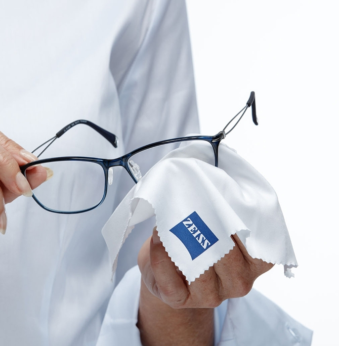

Fashionable UV protection
and extremely clear vision
outdoors in the sun.
One lens for all outdoor activities.
This fashionable accessory is indispensable for ensuring that you enjoy superb, clear vision and 100% protection against UV rays. All of this is available in a single lens. ZEISS sunglass lenses – the best choice for your sunglasses. Whether you have prescription lenses or not, our comprehensive range features individualised sunglass lenses for everyone.

Sunglass lenses from ZEISS –
fashionable, versatile and high-performing. For all outdoor activities.
Our wide selection of progressive lens designs enables your optician to produce a pair of progressive glasses optimised for your particular vision needs and featuring unprecedented quality. Cutting-edge computer technology assists in measuring visual performance and fitting the lenses to your frames. The near, intermediate and distance zones are all incorporated into one lens with smooth transitions. These lenses are tailor-made for your facial shape, your lifestyle, your career and your visual habits. Individual and one-of-a kind – just like you.
Optician Search
Find a Zeiss Optician near you
Filter out up to 100% of UVA and UVB radiation. Take your place in the sun – without damaging your eyes.
All ZEISS sunglass lens categories – Urban, Drive and Active – feature 100% protection against UVA and UVB radiation, providing optimum protection for your eyes. Enjoy comfortable vision when you're outdoors in the sun. Your eyes will thank you.
Here's a tip: the more sensitive your eyes are to light, the darker the sunglass tint should be. Bright tints and gradient tints are ideal on cloudy days with little sunlight, whereas dark tints protect your eyes in strong sunshine.
Sunglass lenses for city life.
Modern, fashionable, colourful. Optimum sun protection for fashion fans.
Our Urban sunglass lens category is ideal for fashionistas and individualists who want to be stylish. We offer eye-catching colours, attractive designs and aesthetically appealing mirror coatings. And featuring 100% protection against UVA and UVB radiation.
What sets our sunglass solutions for life in the big city apart?
More colours. Select your personal tint from a nearly unlimited number of options – or make use of our large selection of standard and gradient tints ...
Stylish options for a mirror coating that can be combined with different options to fit your personal style ...
Wearer comfort. Glasses with ZEISS self-tinting lenses prevent the (annoying) need to switch glasses: they darken quickly outside, but clear automatically indoors. A pair of glasses suitable for everyone and ideal for everyday situations – at work, when shopping, in the park or at a café ...
Our recommendation for the Urban type:
Trendy tints with fashionable coatings, including anti-mirror coatings, are great for sunny days in the city. If you want to be more comfortable outdoors, choose self-tinting lenses.
Light intensity: low to high
recommended filter category: 0 to 3, depending on the city and level of sunlight
light absorption: 0-92%,depending on the city and level of sunlight
ZEISS sunglasses for drivers.
Reduce the sensation of glare, increase contrast and protect your eyes when driving.
On the road and lovin' it: ZEISS sunglass lenses are ideal for petrolheads who live to drive, as well as for frequent drivers who value maximum visual comfort and safety. An optional polarisation filter in the lens reduces the sensation of glare in traffic (e.g. in bright sunlight or when the road is wet). Special tints such as Skypol® or Skylet® improve contrast perception. Also available as wrapped lenses for additional protection from the wind, making them ideal for hitting the open road in a convertible. And featuring 100% protection against UVA and UVB radiation.
What sets our sunglass solutions for driving apart?
You enjoy an exceptionally clear view of the road because irritating glare, from sunlight or reflections on the wet road, is reduced to a minimum thanks to a polarisation filter ...
A contrast-enhancing tint for optimum vision when driving which doesn't reduce the lens suitability for driving: ZEISS Skypol and ZEISS Skylet ...
Effective protection against the wind when cruising in your convertible. ZEISS sunglass lenses are also available as wrapped lenses. With a specially optimised thickness along the edges of the lens ...
Enjoy greater safety when driving – with ZEISS DriveSafe lenses. These are also available with a special tint and polarisation filter for improved contrast perception when you're on the road ...
Our recommendation for the Drive type:
Sunglass lenses for driving must be comfortable and provide you with a sense of security. Contrast-enhancing lenses and the traditional tints (brown, grey and green) are recommended because not all colours are suitable for driving.
Light intensity: middle to high
recommended filter category: 2 to 3
light absorption: 57-92%
Sunglass lenses for all sports enthusiasts.
Precisely tailored to fit your lifestyle. Enjoy extremely clear vision up to the edges of the lens.
No matter if you enjoy skiing, biking or working in your garden, ZEISS sunglass lenses are the ideal choice for people with an active lifestyle. These lenses are individualised to accommodate your favourite hobby or sport, with an optional green, red, intensive blue or silver mirror coating. They are also sporty, durable and fashionable – as well as extremely comfortable: the mirror coating prevents annoying reflections on the back surface of the lenses. Also available as wrapped lenses. And featuring 100% protection against UVA and UVB radiation.
What sets our sunglass solutions for people with active lifestyles apart?
All-round protection against the sun, wind and more: sports eyewear with wrapped ZEISS sunglass lenses features suitably thin edges, even if you have a high prescription ...
Enjoy optimum vision on the land and on the water. A must-have for water sports enthusiasts: sunglass lenses with a polarisation filter to minimise unpleasant glare and reflected sunlight, e.g. when sailing, surfing or even driving on wet roads ...
Colour and tint – perfectly tailored to your needs. Which tint provides the best contrast in which weather? How can yellow lenses enhance your athletic performance? Choose the colour you like best with a suitable tint intensity to accommodate every requirement, even in very bright sunshine ...
Performance when it counts. The high-performers amongst sunglasses for winter sports: ZEISS ski goggles ...
Our recommendation for the Active type:
Different light conditions are a challenge, and your eyewear should help you 'read the slopes' so that you can enjoy your time outdoors to the fullest. Functional tints, lenses with a mirror coating and wrapped lenses for good vision protect your eyes and help you see clearly.
Light intensity: high to extremely high and functional
recommended filter category: 2 to 4
light absorption: 82-97%
ZEISS single vision lenses:
enjoy perfect vision up-close and far away.
ZEISS single vision lenses help correct short- and long-sightedness. These lenses are fitted to the individual wearer and are optimised for good vision – even in the periphery of the lens. They're also thin, aesthetically appealing and offer great spontaneous wearer tolerance.
Here are the details:
ZEISS progressive lenses.
Small masterpieces.
Just like a tailor-made suit, ZEISS progressive lenses are adapted to precisely meet the wearer's needs. This ensures greater wearer tolerance, faster adaptation and all-around clear vision.
Here are the details:
Scratches and dirt don't stand a chance. More robust than ever.
High-performance lens coatings make your glasses extremely durable against scratches or adhesive dirt. The benefit: your lenses remain dirt-free for longer, making them significantly easier to clean. See better, look better – thanks in part to the latest anti-reflective coating.

5 Tips for Sunglass Wearers
1. "Sunglasses that are both a fashionable accessory but also offer great vision support? I don't believe it!" – That's not a contradiction. Even for those who have a high prescription or for progressive lens wearers, ZEISS sunglasses are the optimum solution.
2. Thanks to a nearly unlimited selection of tints, you can revel in the different colours available – just like when buying clothes. Lenses with gradient tints or mirror coatings are currently quite popular. Try them out – maybe they're a perfect fit for your favourite outfit!

3. 100% UV protection to prevent harmful UVA and UVB radiation from damaging your eyes – a must-have for every pair of sunglasses. All ZEISS sunglass lenses are available with 100% UV protection. This comes as either a standard feature or as an accessory.

4. Taking good care of your sunglass lenses is important. During purchase, make sure you select the right lens coating (such as ZEISS DuraVision) so that you can enjoy your sunglasses for a long time to come.
5. Your optician will be happy to discuss what sunglasses would be right for you. No matter if you have wrapped lenses, a polarisation filter, unusual frames or if your lenses have been optimised for driving – there's a lot your sunglasses can do.
